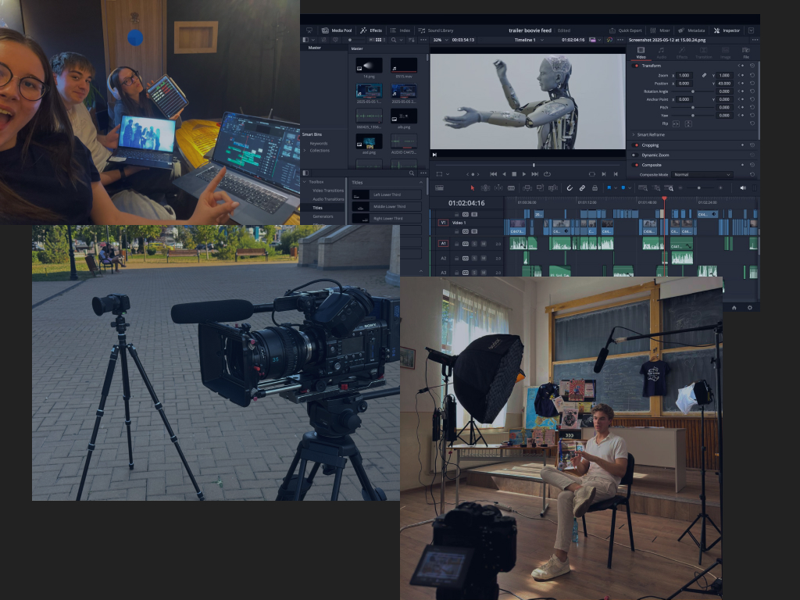
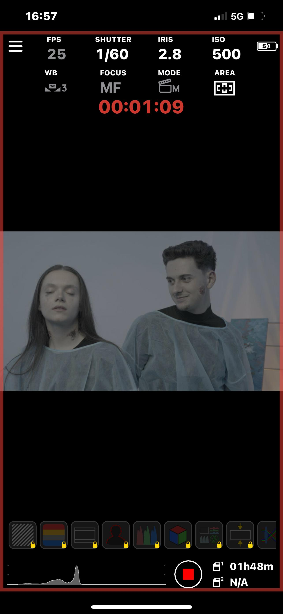

Scopul nostru este de a ne aduce ideile la viață prin orice formă de conținut, indiferent că e film, fotografie sau creație literară. Mai mult, ne dorim să participăm la diverse concursuri și festivaluri de film. Echipa noastră este împărțită în 5 departamente: tehnic, creativ, estetic, cast și producție. Cerința minimă pentru a ni te alătura, indiferent de gradul de experiență, este să fii pasionat de ceea ce faci, pentru că noi credem că orice skill poate fi căpătată alături de noi.
Înainte de noi, a fost echipa Overthink (sau cum o mai numim, Overthink-ul Mare), fondată de Matei Elesei și Răzvan Marin în C.N. „Vasile Alecsandri” Bacău. Totul a început cu o idee, o ambiție de a face ceva nou și inedit în cadrul unei campanii antidrog, unde în loc de o poză sau un afiș, Matei a decis să facă un film. După, aceștia au continuat să creeze scurtmetraje din ce în ce mai ambițioase, de la cascadorii călare sau chiar aviatice, alături de o echipă schimbătoare, dar cu același nucleu. În prezent, sub îndrumarea acestora, dar mai ales a lui Matei, noi ne creăm propria poveste spunând-o pe a lor.
Povestea Overthink a crescut de la o idee de film într-un liceu din Bacău până la o echipă nouă, proiecte premiate și planuri tot mai mari.
Overthink este fondat de Matei Elesei și Răzvan Marin în C.N. „Vasile Alecsandri” Bacău.
Apare primul scurtmetraj al echipei, momentul care transformă ideea inițială într-un proiect cinematografic real.
La începutul anului școlar are loc prima etapă de recrutări, prin care echipa începe să crească.
Overthink participă la ediția Boovie din 2022, intrând într-un circuit important de concursuri dedicate filmului realizat de elevi.
Unul dintre membrii Overthink ajunge jurat la Boovie, confirmând creșterea echipei și experiența acumulată.
Apare documentarul „Ultima Cascadă”, proiect premiat la multiple concursuri și unul dintre cele mai importante filme ale clubului.
Echipa participă pentru prima dată sub forma Overthink Jr. la Boovie, marcând începutul noii generații.
Overthink Jr. este lansat oficial ca nouă echipă de liceeni pasionați de film, fotografie, scris și producție.
Are loc prima etapă de recrutări pentru noua echipă, moment prin care clubul își extinde departamentele și membrii.
Noua echipă participă la CineDrama 2026 și obține premiul pentru cea mai bună interpretare feminină.
Overthink Jr. participă din nou la Boovie, continuând tradiția clubului în concursurile de film pentru elevi.
Clubul anunță cel mai mare proiect de până acum: Overthink Film Fest, un festival dedicat filmului independent și tinerilor cineaști.
Nu căutăm oameni perfecți. Căutăm oameni implicați, curioși și dispuși să învețe lucrând alături de ceilalți.
Credem că pasiunea este punctul de plecare pentru orice proiect bun. Experiența se poate construi, dar dorința de a crea trebuie să existe.
Învățăm nu doar studiind teoria, ci punând-o în aplicare, încercând și greșind, înțelegând ce funcționează și ce nu, alături de o echipă pasionată și dedicată fiecărui proiect.
Un film nu se face singur. Fiecare rol contează, iar fiecare membru are responsabilitatea de a contribui la proiectul comun.
Încurajăm ideile îndrăznețe, încercările noi și proiectele care ies din zona de confort. Așa crește o echipă creativă.
Fiecare departament are un rol esențial în procesul de creație. Împreună, ele transformă o idee într-un proiect complet, de la concept și imagine până la interpretare și organizare.


Se ocupă de concepte vizuale și crearea lor. Dacă ești o persoană creativă pasionată de scris și de construirea poveștilor cinematografice, te așteptăm să faci parte din echipă.

Transformă viziunea artistică în realitate. Aici tot ce înseamnă partea vizuală și audio trece prin mâinile tale. Dacă ești pasionat de filmare, editare video, sunet și fotografie, te așteptăm să faci parte din acest departament.


Aduce personajele la viață prin talent actoricesc cu ajutorul mentorului nostru în actorie, doamna profesoară Cristina Frânculescu.


Dă viață universului vizual al filmului prin detalii care construiesc atmosfera și identitatea personajelor. Dacă îți place să creezi decoruri, să lucrezi cu machiaj artistic sau să imaginezi costume memorabile, acest departament este pentru tine.


Este motorul practic al clubului de film, coordonând organizarea și logistica fiecărui proiect. De la planificarea filmărilor până la gestionarea resurselor, aici se transformă ideile creative în pași concreți. Este echipa care se asigură că visul cinematografic prinde viață în cele mai bune condiții.